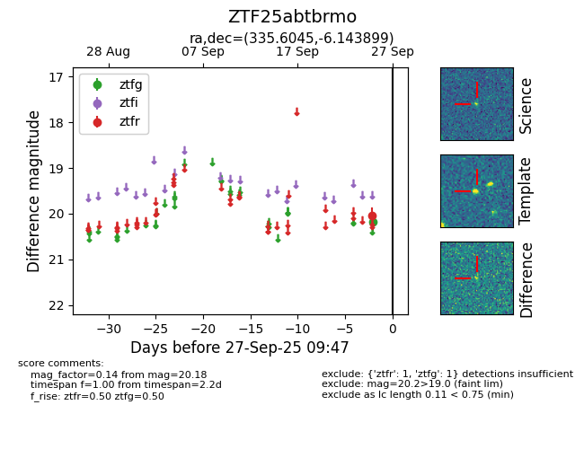

FINK: ZTF25abtbrmo
Lasair: ZTF25abtbrmo
ALeRCE: ZTF25abtbrmo
ZTF25abtbrmo (ztf,fink)
equatorial (ra, dec) = (335.6045,-6.14390)
galactic (l, b) = (56.7431,-48.86123)

last ztfg=20.18, ztfr=20.04
1 ztfg, 1 ztfr detections